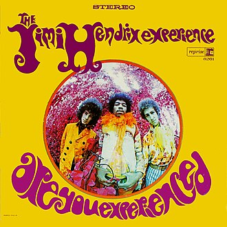
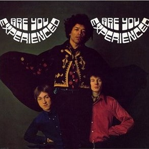
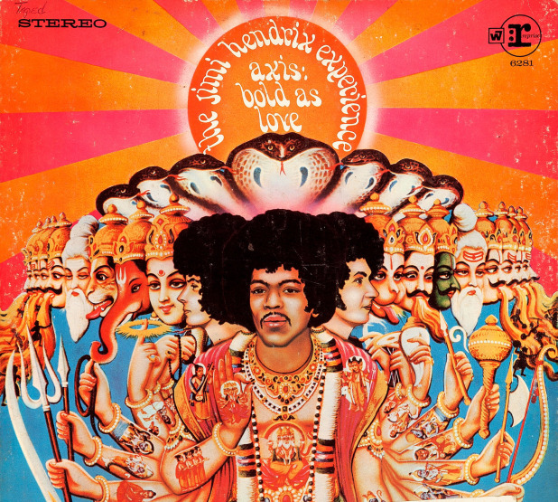

Are You Experienced is the debut studio album by the Jimi Hendrix Experience. Released in 1967, the LP was an immediate critical and commercial success, and it is widely regarded as one of the greatest albums of all time. The album features Jimi Hendrix's innovative approach to songwriting and electric guitar playing which soon established a new direction in psychedelic and hard rock music.
JIMI HENDRIX
ARE YOU EXPERIENCED?
Released May 1967
Musicians:
Jimi Hendrix, Guitar & Vocals
Mitch Mitchell, Drums & Backing vocals
Noel Redding, Bass guitar & Backing vocals


Side One
- Foxy Lady
- Manic Depression
- Hey Joe
- Love or Confusion
- May This Be Love
- I Don't Live Today
Side Two
- The Wind Cries Mary
- Fire
- 3rd Stone from the Sun
- Foxey Lady
- Are You Experienced?
In 2013, Mojo magazine listed"Are You Experienced"as the greatest guitar album of all time.
The budget for the recordings was rather limited so Chas Chandler (producer) and Hendrix
completed
much
of the album's pre-production work at their shared apartment.
Chas Chandler,
producer
Are You Experienced sold more than one million copies within seven months of its release
AXIS: BOLD AS LOVE
Released Dec 1967
Musicians:
Jimi Hendrix, Guitar & Vocals
Mitch Mitchell, Drums & Backing vocals
Noel Redding, Bass guitar & Backing vocals
Axis: Bold as Love is the second studio album by the Jimi Hendrix Experience. Track Records first released it in the United Kingdom on December 1 1967, only seven months after the release of the group's highly successful debut, Are You Experienced. In the United States, Reprise Records delayed the release until the following month. The album reached the top ten in the album charts in both UK and USA.

Side One
- EXP
- Up from the Skies
- Spanish Castle Magic
- Wait Until Tomorrow
- Little Wing
- If Six Was Nine
Side Two
- You've Got Me Floating
- Castles Made of Sand
- One Rainy Wish
- Bold as Love
Axis: Bold As Love's scheduled release date was almost delayed when Hendrix lost the master tape
of
side
one
of the LP, leaving it in the back seat of a London taxi. With the deadline looming, Hendrix,
Chas
Chandler,
and engineer Eddie Kramer remixed most of side one in a single overnight session.
Hendrix stated that the cover would have been more appropriate had it highlighted his Native
American
heritage.
Jimi Hendrix with Eddie Kramer chief studio engineer
"Little Wing" is one of Hendrix's most popular songs, with interpretations recorded by musicians
in
a
variety of styles.
Incomplete website. Only for teaching purposes. Malmö University